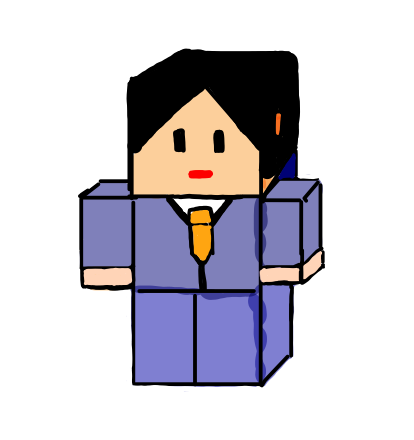

ロボットっぽいアート展
あえて直線のみで描く
ブロックを積み上げたような立体感を表現している．主に，ゲームのキャラクター を想定して制作を行っている．この直線的なキャクターたちは，どのような世界にも適用するであろう．
-

創作の経緯
「ドット絵っていいよね．」というところから始まった． グラフィックがきれいなことが人気のゲーム作品の軸になりつつあるこの原題で，あえて素朴な デザインを行うことで，どの年代のユーザーでも安心して操作が行いやすいゲームの世界観を構築したい．